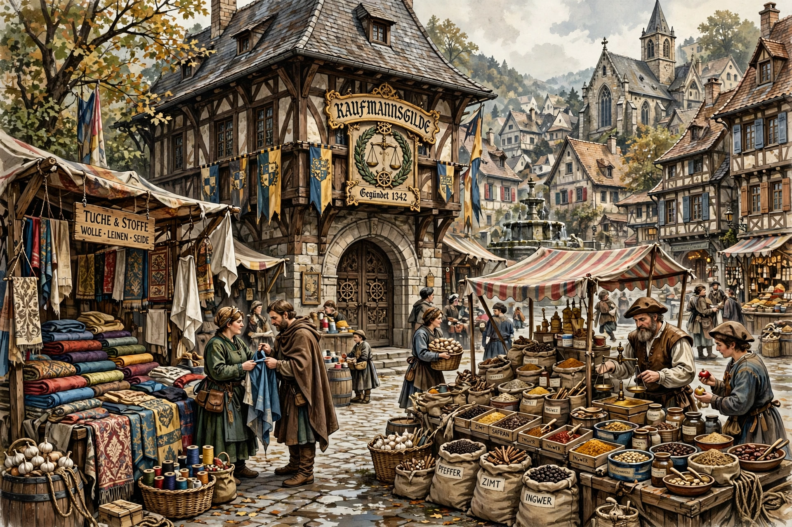

A merchant guild was an association of merchants in a medieval town that controlled trade in its area, protected members, and negotiated privileges with rulers.

Guilds held monopolies on local trade, set weights and measures, regulated prices and quality, provided mutual aid, widows' support, and religious and social functions. Foreign merchants were often required to trade through guild members.
Guilds flourished from the 11th to 16th centuries in Europe, related to craft guilds and bodies such as the Hanseatic League. They declined with the rise of national markets, free trade, and state regulation.